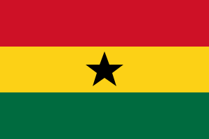

David Wilson
About Me
I am a software developer and platforms engineer in Accra, Ghana. I build web applications with Laravel, Vue, and PostgreSQL, and outside of work I lead a church choir and teach keyboard.
See my code on GitHub or learn about BYU-Pathway.
Place of Origin

I live and work in Accra, Ghana's capital on the Gulf of Guinea, known for its warm people, music, and growing tech scene.